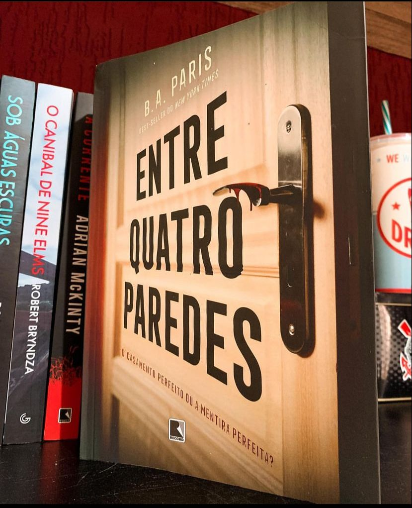

Entre Quatro Paredes
(B.A. Paris - Record)
⭐⭐⭐
⚠️Gatilhos: Violência Doméstica e abuso psicológico
Um thriller sobre um sonho que torna-se pesadelo, Grace é a esposa perfeita. Ela abriu mão do emprego para se dedicar ao marido e à casa. Agora prepara jantares maravilhosos, cuida do jardim, costura e pinta quadros fantásticos. Grace mal tem tempo de sentir falta de sua antiga vida. Ela é casada com Jack, o marido perfeito. Ele é um advogado especializado em casos de mulheres vítimas de violência e nunca perdeu uma ação no tribunal. Rico, charmoso e bonito, todos se perguntavam por que havia demorado tanto a se casar. Os dois formam um casal perfeito. Eles estão sempre juntos. Grace não comparece a um almoço sem que Jack a acompanhe. Também não tem celular, que ela diz ser uma perda de tempo. E seu e-mail é compartilhado com Jack, afinal, os dois não guardam segredos um do outro. Parece ser o casamento perfeito. Mas por que Grace não abre a porta quando a campainha toca e não atende o telefone de casa? E por que há grades na janela do seu quarto? Às vezes o casamento perfeito é a mentira perfeita.
Confesso que o livro me decepcionou muito. Eu esperava outro tipo de narrativa em relação à violência doméstica. Achei que tudo se arrastou por todo tempo pra no fim, tudo se resolver nas últimas páginas.
Também senti falta da autora se aprofundar mais nas questões e motivações de Jack.
Talvez a própria sinopse engane o leitor( o que é normal) mas, dessa vez não gostei da abordagem que a narrativa apresentou.